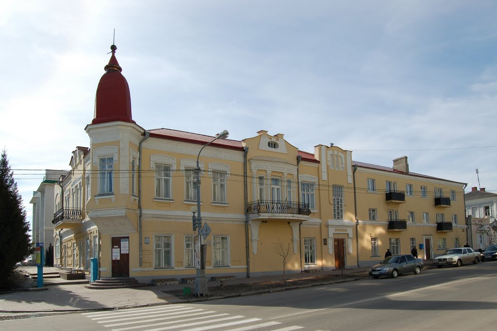
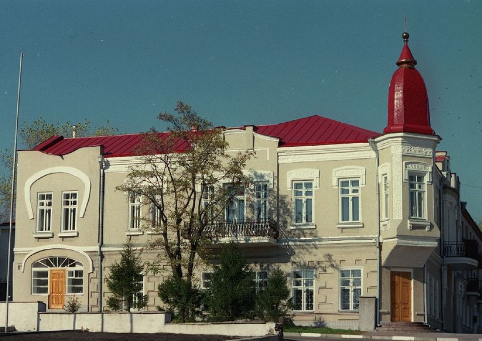
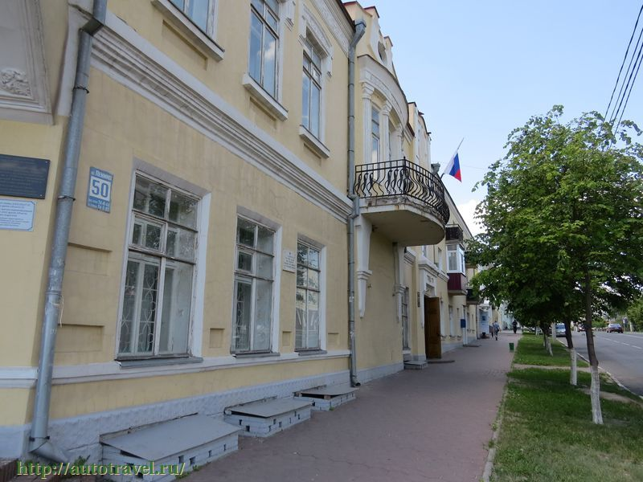

Старооскольский краеведческий музей
- Режим работы: С 10:00 до 17:30, в пятницу до 14:00,
понедельник и воскресенье - выходной - Цена за вход: минимальная программа: 50 руб, максимальная - 150 руб
- Местоположение: ул. Ленина, 57, Старый Оскол, Белгородская обл.
Старооскольский краеведческий музей - одно из старейших учреждений культуры Белгородской области. Его история неразрывно связана с историей города. В конце февраля 1923 года в Старом Осколе был открыт Пролетарский клуб, при котором работали различные кружки, в том числе и краеведения. При клубе было организовано старооскольское отделение губернского общества краеведения, а 11 апреля было принято решение о создании в Старом Осколе музея краеведения.  Старооскольцы активно поддержали идею создания музея, и на безвозмездной основе в фонды стали поступать экспонаты. Приносили изделия традиционных для Староосколья ремесел, старинные книги, предметы быта, находки разных исторических эпох.  Самый сложный период в истории музея - это период Великой Отечественной войны. В годы оккупации городу был нанесен огромный ущерб. Пострадал и краеведческий музей: практически все коллекции были утрачены. Но сразу же после освобождения города было принято решение о возрождении Старооскольского краеведческого музея. К 20 апреля 1945 года было собрано 2400 экспонатов, и около 10 тысяч человек смогли посетить вновь открывшиеся экспозиции.  За десятилетия послевоенной истории музей пополнился тысячами новых экспонатов. С 1966 по 1995 годы музей находился на первом этаже жилого пятиэтажного дома по улице Ленина. В 1995 году краеведческий музей был переведен в здание, являющиеся памятником истории и архитектуры - дом купца Лихушина.